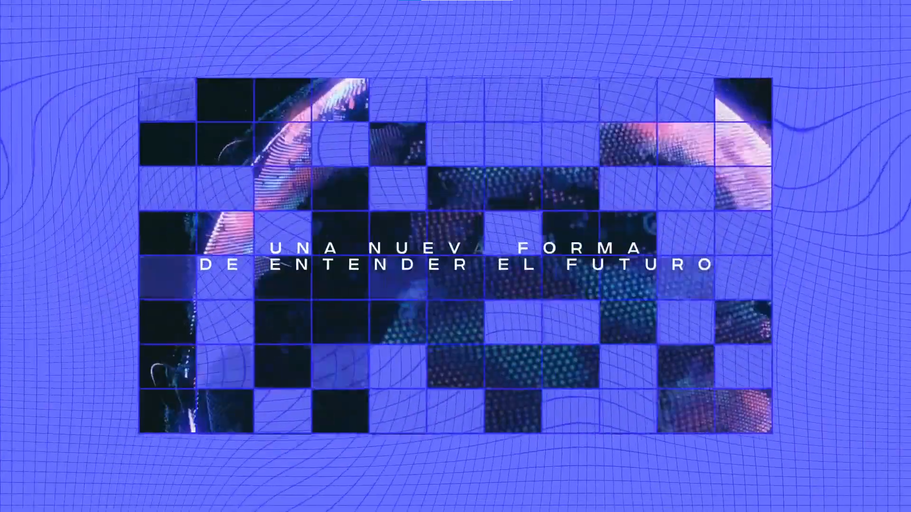
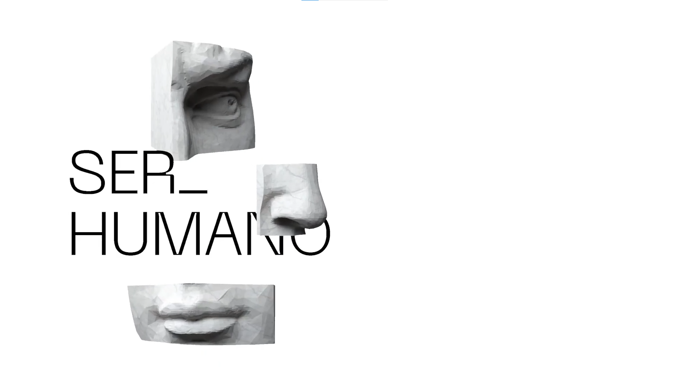
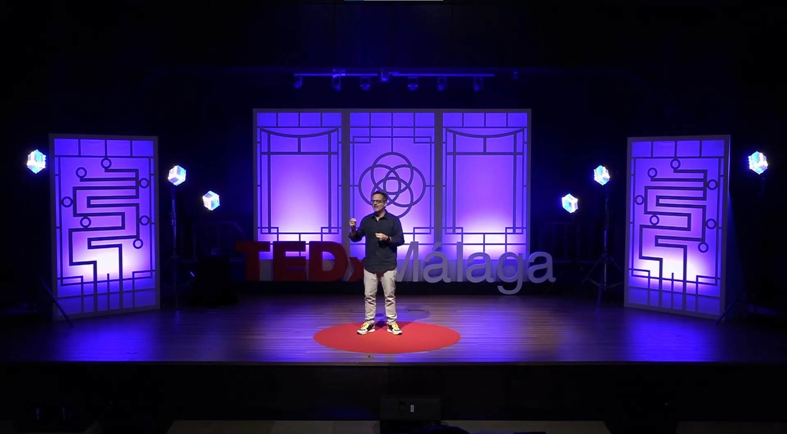

¿La IA es tu aliada o tu muleta?
La inteligencia artificial llegó para quedarse. Y con ella, una pregunta que cada vez más estudiantes, creativos y profesionales se hacen en silencio: ¿la estoy usando yo, o me está usando a mí?
La IA puede desbloquearte cuando estás en blanco, corregirte cuando te perdés, y acelerar lo que de otra forma te llevaría horas. En ese sentido, es una herramienta poderosa. Pero hay una trampa sutil: usarla sin pensar puede ir vaciando, de a poco, tus propias capacidades. Tan gradualmente que casi no te das cuenta.
El problema no es la herramienta, es cómo la usás. Imaginá que alguien te carga la mochila todos los días. Al principio parece cómodo. Pero con el tiempo, tus músculos se atrofian. Con la IA pasa algo parecido: cuando delegás todo (la idea, la estructura, las palabras, el criterio) el trabajo deja de ser tuyo y dejás de ejercitar lo que te hace crecer.
Muchas herramientas de IA generan contenido basado en patrones estadísticos: combinan lo que ya existe para producir algo que "suena bien". El resultado puede ser correcto, prolijo, hasta impresionante. Pero también puede sonar a todo el mundo al mismo tiempo. Textos que podrían haber sido escritos por cualquiera... o por nadie.
Cuando eso pasa, la voz propia desaparece. Y en disciplinas como la Comunicación, el Diseño o cualquier campo creativo, la voz propia es el producto.
Hay algo que la IA no puede reemplazar (aunque parezca que sí). Estudiantes de Comunicación lo dicen claro: la IA puede recortar imaginación, aplanar la voz propia y saltarse momentos que no parecen importantes pero lo son. El aburrimiento creativo. La duda. La introspección. Ese rato incómodo en que no sabés qué escribir y te quedás mirando el techo.
Esos "tiempos muertos" no son pérdida de tiempo. Son donde suelen nacer las mejores ideas. Son el momento en que tu mente conecta puntos que no estaban conectados, en que una experiencia personal se convierte en perspectiva propia. La IA no puede replicar eso porque no tiene experiencias. Solo tiene datos.
Hay zonas donde la IA claramente falla, o hace más mal que bien:
Generar ideas realmente originales: puede darte variaciones de lo que ya existe, pero raramente algo genuinamente nuevo.
Escribir con emoción auténtica: puede imitar el tono emocional, pero no puede sentir. Y los lectores lo notan.
Trabajar fuentes serias y verificadas: la IA puede "alucinar" datos, inventar citas o mezclar información real con falsa sin avisarte.
Abordar temas personales o sensibles: cuando el tema te toca de cerca, la voz tiene que ser tuya. No hay algoritmo que pueda hablar desde tu historia.
El proceso de razonar en profundidad: si la IA siempre te da la respuesta antes de que puedas pensar, nunca entrenás el músculo de razonar por tu cuenta.
En todas estas áreas, el criterio propio sigue siendo insustituible.
¿Cuándo sí tiene sentido usarla?
La IA brilla cuando la usás como punto de partida, no como punto de llegada. Algunos ejemplos concretos de uso inteligente:
Pedirle ideas para arrancar, y después elegir y transformar las que te resuenan.
Usarla para corregir gramática o mejorar la claridad de algo que ya escribiste vos.
Explorar ángulos distintos sobre un tema antes de decidir el tuyo.
Resumir información densa para tener un panorama rápido, y después profundizar por tu cuenta.
Generar un borrador que después reescribís completamente con tu voz.
La diferencia está en si la IA trabaja para tu proceso, o si reemplaza tu proceso.
Todo lo que describimos hasta acá no es solo teoría. Para entender cómo se traduce en la realidad, estudiantes de las carreras de Licenciatura en Periodismo, Diseño, Producción y Realización Audiovisual, y Comunicación Institucional de la Universidad Nacional de Río Cuarto respondieron una encuesta sobre sus hábitos reales con la IA. Los resultados son tan reveladores como esperables.
Cuando se les preguntó específicamente si usan la IA para editar o corregir sus propios trabajos, las respuestas dibujaron tres perfiles muy distintos y juntos cuentan una historia sobre cómo convivimos con esta herramienta sin que nadie nos haya enseñado a hacerlo.
Porque no todos la usan igual. Ni con la misma confianza. Ni con el mismo criterio. Algunos la dejaron entrar de lleno a su proceso creativo. Otros la mantienen a distancia, como una voz de consulta. Y hay quienes directamente prefieren no usarla, no por desconocimiento, sino por una decisión consciente de preservar algo propio.
Tres perfiles. Una misma herramienta. Y una pregunta que cada número deja abierta: ¿hasta dónde estás dispuesto a dejarla entrar?
Datos extraídos de una encuesta realizada a 40 estudiantes de las nuevas Licenciaturas en Comunicación de la UNRC, en el marco del trabajo final de la materia Comunicación Digital Interactiva (2025).
Este largo recorrido nos permite trazar un panorama claro, aunque no simple, sobre el lugar que ocupa la inteligencia artificial en los procesos creativos y de estudio de los estudiantes universitarios contemporáneos.
En primer lugar, la IA representa una herramienta de alto potencial: puede resolver bloqueos creativos, corregir errores, acelerar tareas y ampliar posibilidades que de otra forma requerirían mayor tiempo y recursos. Sin embargo, ese mismo potencial lleva implícito un conjunto de riesgos que no pueden ignorarse. Cuando su uso se vuelve automático o irreflexivo, la dependencia tecnológica puede erosionar capacidades cognitivas fundamentales como el pensamiento crítico, la exploración autónoma y la construcción de una voz propia.
Los resultados de la encuesta realizada aportan evidencia concreta sobre estos fenómenos. El 97,6% de los encuestados declaró haber utilizado inteligencia artificial al menos una vez, y el 75,6% la incorporó como parte habitual de su rutina académica. Estos números confirman que el uso de la IA dejó de ser una excepción para convertirse en una práctica extendida dentro del ámbito universitario.
Sin embargo, los datos también revelan una tensión significativa. Cuando se consultó a los estudiantes si consideraban que la IA mejoraba genuinamente su proceso creativo, solo el 39% respondió afirmativamente. El 53,7% expresó dudas al respecto, y una minoría lo negó directamente. Esta brecha entre la frecuencia de uso y el nivel de confianza en la herramienta sugiere que los estudiantes mantienen una relación crítica con la tecnología, aun cuando la incorporan cotidianamente.
Esa misma tensión se manifiesta en los perfiles de uso identificados respecto a la corrección y edición de trabajos propios. El 45% de los encuestados utiliza la IA de manera directa en esa etapa del proceso. El 35% la emplea de forma parcial, como punto de partida o fuente de inspiración, reservando el criterio final para sí mismos. El 20% restante opta por no utilizarla en ese momento, ya sea por desconfianza en la calidad de sus resultados o por una decisión consciente de preservar la autenticidad del proceso.
Las zonas donde la intervención humana sigue siendo insustituible. A partir de las respuestas relevadas, los propios estudiantes identificaron las áreas donde la IA resulta menos útil o directamente contraproducente. Entre ellas se destacaron la generación de ideas verdaderamente originales, la redacción con carga emocional auténtica, el trabajo con fuentes verificadas y confiables, el abordaje de temáticas personales o sensibles, y el desarrollo del razonamiento profundo. En todas estas dimensiones, el juicio humano y la experiencia personal continúan siendo elementos que ninguna herramienta algorítmica puede sustituir.
Este señalamiento no es menor. Indica que, más allá del entusiasmo inicial que suele rodear a las nuevas tecnologías, existe entre los estudiantes una conciencia creciente sobre los límites reales de la IA y sobre los riesgos de delegar en ella etapas del proceso creativo que requieren subjetividad, criterio y experiencia vivida.
Los fenómenos descriptos a lo largo de esta investigación (la descarga cognitiva, el sedentarismo intelectual, la despersonalización de las producciones) no son consecuencias inevitables del uso de la inteligencia artificial. Son consecuencias de un uso acrítico y sin intención. La diferencia entre ambos escenarios radica, fundamentalmente, en el grado de agencia que el estudiante o profesional ejerce sobre la herramienta.
Cuando la IA se utiliza como punto de partida, para generar ideas que luego se cuestionan, para obtener borradores que luego se reescriben, para corregir textos que ya tienen una voz definida, su potencial se activa de manera productiva. Cuando, en cambio, reemplaza etapas completas del proceso sin mediación crítica, el resultado tiende a ser trabajo uniforme, poco auténtico y empobrecido en términos intelectuales.
En síntesis, la inteligencia artificial no limita por sí sola la creatividad ni el pensamiento. Lo hace cuando se convierte en sustituto del proceso en lugar de acompañarlo. El desafío, tanto para los estudiantes como para las instituciones educativas, consiste en construir una relación con la tecnología que potencie las capacidades humanas en lugar de reemplazarlas, una relación basada en el uso consciente, crítico e intencionado de una herramienta que, bien aprovechada, tiene mucho para aportar.
Tenés acá una variedad de videos para conocer más acerca del funcionamiento de la Inteligencia artificial en nuestra rutina. Aprende, cuestiónate y reflexiona...

Sabemos que actualmente nuestro potencial humano es limitado y por otro lado que el potencial tecnológico se incrementa exponencialmente. ¿Qué nos queda por hacer a nosotros como humanos?
Ver video
Ruth Falquina, especialista en Inteligencia Artificial aplicada y publicidad, comparte su entusiasmo y su miedo por el nuevo paradigma creativo, sentimientos antagónicos que asegura ha vivido en todas las revoluciones tecnológicas…
Ver video
Antonio, un referente en IA en España, en esta fascinante charla, se te abrirá un ángulo nuevo al respecto: la (des)centralización del poder que da la tecnología. Y de paso, conocerás los molletes de Archidona.
Ver videoCopyright © 2026 Pecorari Priscila